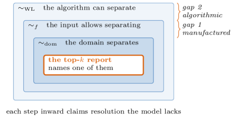
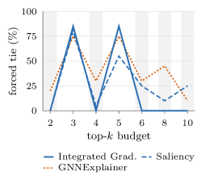

A parameter-free criterion deciding whether score-optimal top-k GNN explanations must split an automorphism orbit is mechanised in Lean 4 with no axiom dependencies.
Abstract
A gradient-based GNN explainer given a molecule with two chemically equivalent nitro groups assigns them attribution scores that are equal to the last bit. It cannot do otherwise: message passing is exactly permutation equivariant, so any automorphism of the input leaves every attribution invariant. Yet the standard report, the top-k edges, names one of the two, and which one is settled by the order of an array. We show this is a structural obstruction rather than an implementation slip. When no minimal valid explanation is fixed by the input's automorphism group, no rule can be single-valued, minimal and symmetry-respecting at once. For the exact-k reports used in practice we give a parameter-free criterion, mechanised in Lean 4 with no axiom dependencies, that decides from the graph alone whether every score-optimal report of that size must split an orbit. Across 21298 instance-budget decisions the criterion agrees with a mechanical model-equivalence check without exception, and no severing case we found admitted a neutral alternative. The obstruction is common. Nontrivial automorphisms occur in 93.4% of Mutagenicity, the dataset the seminal explainability papers use, so the measure-zero dismissal of symmetric inputs, sound on the continuous domains it was made for, collapses here. At the sparsity budget those papers report, 24.0% of molecules with two interchangeable nitro groups (6 of 25) surface exactly one of them, every one arbitrary under mechanical verification. A model's blindness also manufactures symmetry: every MUTAG molecule contains atoms chemistry separates and the network provably cannot, and a matched control shows the resolution is set by what the model reads rather than how it is parameterised. Reporting orbits removes the arbitrariness at 0.11 ms and 0.43 extra edges per graph.
Problem
Gradient-based GNN explainers assign identical attribution scores to chemically equivalent substructures because message passing is permutation equivariant. Yet the standard top-k edge report names only one of two tied substructures, with the choice settled by array ordering, producing arbitrary explanations.
Approach
The authors formalize exact equivariance of message-passing GNNs and prove that when no minimal valid explanation is fixed by the input's automorphism group, no rule can be single-valued, minimal, and symmetry-respecting simultaneously. For exact-k reports they give a parameter-free criterion, mechanised in Lean 4 with no axiom dependencies, that decides from the graph alone whether every score-optimal report must split an orbit. Automorphism groups are computed exactly with nauty, and predictions checked against a mechanical model-equivalence test. They propose an orbit-aware reporting algorithm selecting whole orbits.

Figure 2: The three relations of Proposition ˜ 2 , coarsest outside, with a top- k report sitting strictly inside all of them. Gap 1 is resolution the model provably lacks: it is present in 100.0% of MUTAG molecules and places 16.2% of their edges in an orbit the domain splits. Gap 2 is resolution the forward pass lacks but a coordinate-level attribution can still supply, which is why only the fir
Results
The Lean-verified criterion agreed with a mechanical model-equivalence check on all 14530 decisions with no false positives or negatives. Nontrivial automorphisms occur in 93.4% of Mutagenicity molecules, and 24.0% of molecules with two interchangeable nitro groups surface only one at k=10. Orbit-aware reporting eliminates the arbitrariness at 0.11 ms and 0.43 extra edges per graph.

Figure 3: The criterion’s signature on Tree-Grid, computed from the graph alone before any model is consulted. Shaded budgets are those whose cut consumes whole edge orbits. For Integrated Gradients the rate of severing falls to zero at every one of them and rises to the maximum in between. Saliency alternates in the same phase but less sharply, because it ranks different orbits into the report. G